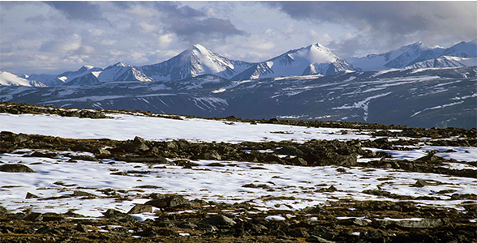

Climate of the tundra

The tundra is a bleak and treeless place. It is cold through all months of the year Summer is a brief period of milder climates when the sun shines almost 24 hours a day. It has been called "the land of the midnight sun". But even the sun can't warm the tundra much. The short summer lasts only 6 to 10 weeks. It never gets any warmer than 45 or 50° F. The warmer weather causes a layer of permafrost, ice that never goes away in the ground, to melt, creating bogs and shallow lakes that don't drain. They breed stinging insects, which make life even in the summer miserable for the inhabitants of the tundra. The wind blows constantly, whipping around the small plants.
During the long winter months the sun barely rises and it is dark for most of the day. Bitter cold winds scud across the barren snowscape, exposing high plateaus to barren ground.
Winter temperatures don't reach above 20° F and average -20° to -30°F.
The tundra is an unusually cold and dry climate. Precipitation totals 6-10 inches of rain a year, including melted snow. This is almost athe same amount as the precipitation in the world's driest deserts. Coupled with powerful and drying winds, the tundra is a very extreme biome.